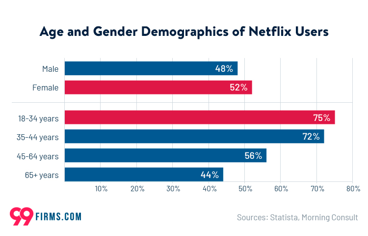
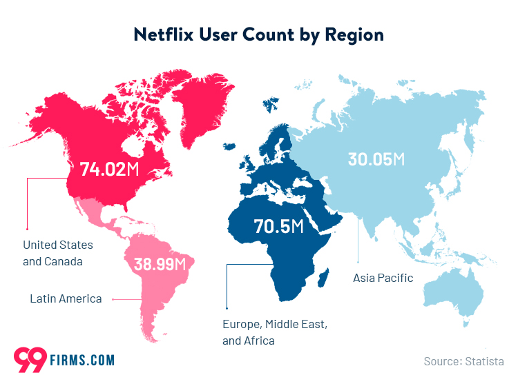

Netflix: A Global Leader in Streaming Entertainment
Netflix, Inc., an American media company founded in 1997, is the world’s preeminent subscription video on-demand (SVOD) service. Launched in 2007, it offers a vast library of original and acquired films and television shows across various genres. As of January 2024, Netflix boasts an impressive subscriber base exceeding 260 million paid memberships in over 190 countries, solidifying its position as the industry leader in streaming media.
Personalized Recommendations Drive User Engagement:
Central to Netflix’s success is its sophisticated recommendation system. This system, powered by advanced machine learning algorithms, analyzes a multitude of user data points, including viewing history, search queries, and user ratings. By leveraging these insights, Netflix curates a personalized selection of movies and TV shows, significantly enhancing user engagement and satisfaction. This data-driven approach ensures that subscribers discover content tailored to their individual preferences, fostering a more enjoyable and immersive entertainment experience. (Wikipedia contributors 2024)
Scenario Design Analysis
Who are the target users?
Target Market: Netflix employs a broad market targeting strategy, encompassing individuals with a shared interest in streaming movies and television shows online.
Historical Demographics: Traditionally, Netflix’s subscriber base exhibited a skew towards younger age groups, with a significant concentration among Generation Z and Millennial demographics.
US Age Demographics: Data indicates that within the United States, approximately 75% of Netflix users belong to the 18-34 year old age bracket. (Gajic, n.d.)

Netflix has established a presence in a global market, with a subscriber base concentrated in the United States and Canada. However, the company has recently experienced significant growth in its reach across Europe, the Middle East, and Asia.

What are the key goals?
Netflix’s Strategic Alignment and Performance Measurement
Netflix’s success can be attributed to a strong alignment between its mission and vision. This translates into clear tactical methods that propel the brand forward and achieve its vision. This strategic alignment serves as the foundation for achieving positive results.
Key Performance Indicators (KPIs) for Monitoring Goals
Netflix leverages several key performance indicators (KPIs) to track and analyze progress towards its goals. These KPIs can be categorized as follows:
Reach: This metric measures the number of individuals within the target audience who have the potential to see Netflix’s advertisements on social media platforms.
Engagement: This KPI assesses how users interact with the content Netflix presents to them. This could involve metrics like clicks, shares, comments, or time spent viewing content.
Customer Advocacy: This metric goes beyond simple interaction and measures whether users are discussing Netflix content with others on their own initiative, signifying positive brand sentiment.
Netflix Recommender System
Leveraging Machine Learning for Personalized Recommendations
Netflix utilizes Apache Spark and machine learning algorithms to power its highly successful movie recommendation system. This system is responsible for over 80% of the content users choose to watch on the platform.
Personalization Process
Dynamic Home Page: Upon logging in, users encounter a personalized home page featuring curated rows of movie recommendations.
Data-Driven Selection: Netflix employs machine learning to analyze user data and preferences, including historical viewing habits and interaction patterns. This analysis informs the selection of specific categories and movie titles displayed on the home page.
Ranking and Relevance: The recommendation system goes beyond simply presenting options. It leverages machine learning to sort and rank movie recommendations based on their predicted relevance to individual user preferences. Apache Spark clusters play a crucial role in efficiently running these machine learning pipelines.
Predictive Modeling: The core of the recommendation system lies in its ability to predict user interest. This is achieved by gathering a comprehensive dataset encompassing user interactions, viewing histories of similar users, metadata from previously watched content, and user-specific device preferences.
Recommendation Algorithm
While the specifics of Netflix’s recommendation algorithm remain undisclosed, it is believed to be a hybrid approach that combines collaborative filtering and content-based filtering techniques. (“Netflix Recommendation System: How It Works,” n.d.)
Netflix’s recommendation system is very complex and uses various technologies such as:
Reinforcement learning (RL algorithms don’t need any information in advance; they learn from data during the process)
Neural networks (they try to imitate the way the human cortex works; neural networks are extremely important in deep learning)
Causal modelling (it’s an analytically technique concentrated on the cause-and-effect relationships)
Probabilistic graphical models (PGM expresses the conditional dependence structure between random variables)
Matrix factorization (it’s a class of collaborative filtering algorithms used specifically in recommendation systems)
Ensemble learning (a technique using multiple learning algorithms to achieve better results)
Improvements
Enhancing User Immersion Through Advanced Personalization
While Netflix’s current recommendation algorithms leverage machine learning for personalization, there’s potential for further improvement by incorporating a broader range of user behavior data.
Beyond Explicit Ratings:
The current system places significant weight on explicit user ratings. However, a more nuanced understanding of user preferences could be achieved by analyzing additional user behavior metrics. This includes:
Watch History Completion Rates: Analyzing the percentage of a movie or show a user completes can reveal their level of engagement with the content.
Time Spent Browsing and Not Selecting: Time spent browsing specific genres or categories without selecting content can indicate user interest, even in the absence of an explicit selection.
Re-watching Behavior: Re-watching behavior is a strong indicator of user preference and satisfaction with a particular movie or show.
Utilizing Implicit User Data:
Netflix could potentially explore collecting additional implicit user data through user hardware, while ensuring user privacy is maintained. This could involve:
Eye-Tracking and Facial Recognition (with Opt-In): With user consent, Netflix could leverage eye-tracking and facial recognition technology on camera-enabled devices to gauge user attention and emotional response to content. This data could provide valuable insights into user engagement.
Smart Device Integration: Integration with smart-watches and smart home devices (with user consent) could offer insights into the environment in which users watch content. This could be used to refine recommendations based on the user’s mood or activity.
Genre Sub-categorization:
Refining genre classifications into sub-genres would allow for a more specific user experience. This would enable users to explore content that caters to their specific preferences within broader categories. For example, distinguishing between “comedy” and sub-genres like “stoner comedy,” “offbeat humor,” or “dark humor” would provide users with more tailored recommendations.
Conclusion
Netflix, the world’s leading internet television network and most valuable streaming service, has garnered acclaim for its innovative recommendation system. Leveraging cutting-edge technologies and machine learning, Netflix’s algorithm delivers accurate and efficient suggestions with minimal latency. The system’s effectiveness stems from a hybrid approach, combining collaborative filtering and content-based filtering techniques to recommend content that aligns with user preferences, interests, and potential discoveries. Despite its success, there’s always room for improvement. Social Integration, Genre Sub-categorization, and User hardware utilization can vastly improve the recommendation system and ensure that Netflix remains at the forefront of delivering a personalized and engaging user exp
I was able to research and learn more about content-based and collaborative filtering in my journey studying Netflix. I learned what Apache Spark is and I learned more about different machine learning technologies that Netflix does. I would like to continue to dive into machine learning and recommendation systems. I will start with A Programmer’s Guide to Data Mining.
References
Gajic, Ana. n.d. “Netflix Statistics.” https://99firms.com/blog/netflix-statistics/#:~:text=The%20platform%20is%20used%20by,income%20of%20less%20than%20%2450%2C000.
Netflix. n.d. “The Story of Netflix.” https://about.netflix.com/en.
“Netflix Recommendation System: How It Works.” n.d. https://recoai.net/netflix-recommendation-system-how-it-works/.
Wikipedia contributors. 2024. “Netflix — Wikipedia, the Free Encyclopedia.” https://en.wikipedia.org/w/index.php?title=Netflix&oldid=1217276599.
Social Recommendations:
One approach could involve leveraging social media profiles (with user consent) to personalize recommendations based on the viewing habits of friends and family. This could be implemented as follows:
Real-Time Visibility: Users could opt-in to see what their friends and family are currently watching on Netflix in real-time. This could spark conversations and encourage co-viewing experiences.
Enhanced Recommendation Algorithm: Social viewing data could be incorporated into the recommendation algorithm, suggesting content that aligns with the preferences of a user’s social circle.